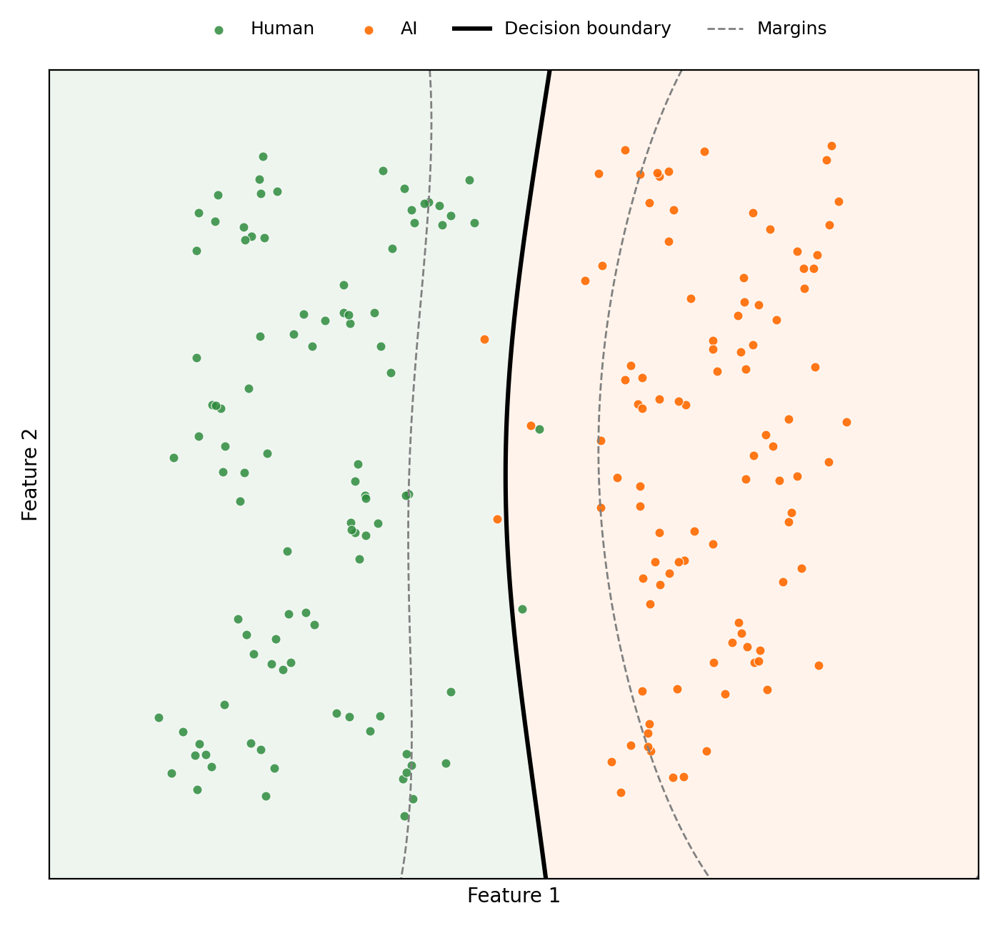
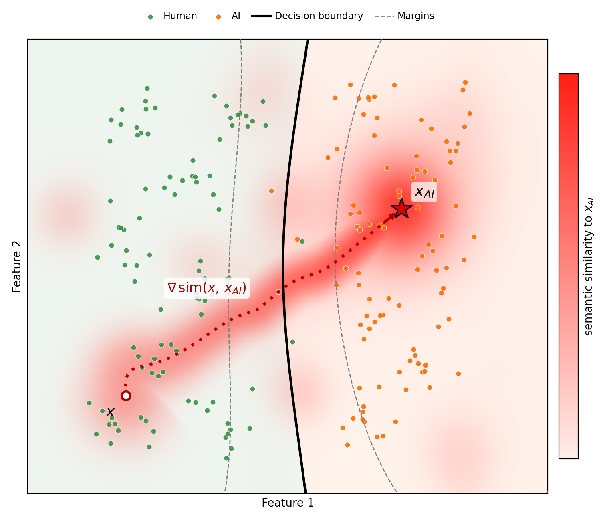

by John Lins
Abstract — This is an informal post detailing the experiments I conducted that resulted in successfully bypassing AI detection. I developed an AI humanizer based on the objectives defined in this article. My first two experiments failed, but my third attempt was successfully able to bypass Pangram 4.0 reliably. The model that worked will not be disclosed in this paper; however, I have detailed below the other model architectures I attempted, as well as a promising approach I have not tested yet.
Traditional AI detectors measured perplexity and other trivially-defined features of AI-generated text.
Adversaries have then built humanizers that vary sentence length, vary temperature, inject abbreviations, etc. This approach once worked against simple detectors, but fails against modern detectors. Modern detectors use multi-layer classification to linearly separate the statistical features of AI text from human text. These detectors are especially difficult to beat when trained on humanized samples.
AI-generated text has a statistical signature due to their autoregressive nature. This signature is both local and global in the text. Below is a dimensionality-reduced visualization showing how text may be represented in the final layers of a detection classifier.

The goal of a humanizer is to successfully perturb a sample such that it travels across the decision boundary while also maintaining meaning and lexical plausibility. That is a very difficult constrained optimization program. However, I successfully was able to achieve this to a moderate degree after attempting three different approaches.

The goal is to make a humanizer that can exploit the decision boundary. I once took a class at UCSB called ECE 194BB where we learned how to perform adversarial attacks on both black-box and white-box classifiers. The most common solutions involved perturbing the input along a gradient until the decision boundary is breached. However, that was for images; perturbing text is significantly harder.
My first attempted humanization solution was to learn a "human" token distribution. My idea was to be fed a large corpus of text all written by the same human author. Then, based on the frequencies of each word, I could build a distribution.
Then I modified the final softmax layer of the model to first return the top 40 tokens, but instead of selecting the most probable, it fed all those tokens equally into this "human" distribution and then selected the most probable word from that distribution instead.
This technique was successfully able to bypass traditional detectors like GPTZero. However, advanced detectors like Pangram were still able to detect 100% AI.
This is because the statistical signature of AI-generated text is not only local, but also global. Since the human distribution was still constrained to pick the top 40 tokens that the LLM was already selecting, the global trajectory of the passage still looked like AI to the classifier.
My original instinct was to perform guided generation where you use an AI detector to guide the generation process. At first, I thought I could do this with a traditional LLM, but then I realized that it would face a similar pitfall as the previous solution attempt.
The issue is that it would be able to optimize the next token to reduce the probability of being detected by AI. However, all the previous tokens are fixed, so you can only guide locally, but not globally.
In order to guide globally, I realized that I could use a diffusion LLM instead of a traditional autoregressive LLM. I've previously published research in the field of diffusion modeling, so this was a familiar approach.
I used an open source diffusion model, where at each diffusion step, it queries the detector to determine which draft was the most human, and then nudges the logits toward that draft.
This failed because the unfinished drafts of diffusion models are essentially just noise, so the detector was classifying them all as human. Consequently, no meaningful guidance was possible.
While the guided diffusion attempt I mentioned above did not work, I realized that I could possibly make it work by including the gradient information of the detector and starting with the AI text (treating it as the initial noise state).
Then you have the diffusion model perturb the text globally based on this optimization formulation:
Here, the second term represents the detector's score \(D(x) \in [0,1]\), whose gradient direction guides the text away from AI detection.
This dual objective function will have each term fight with each other until the output contains text that maintains the same semantic meaning as the original AI text but bypasses the AI detector.
In order for this to bypass advanced detectors, I would first need to train a detector that is powerful enough that it could act as a surrogate model to mainstream detectors. This way it could be generalized. Disclaimer: I assume transferability here.
So, I am not going to disclose the exact methodology here. However, I made a video of it in action (You can see that it bypassed Pangram 71.7% of the time in the samples tested):